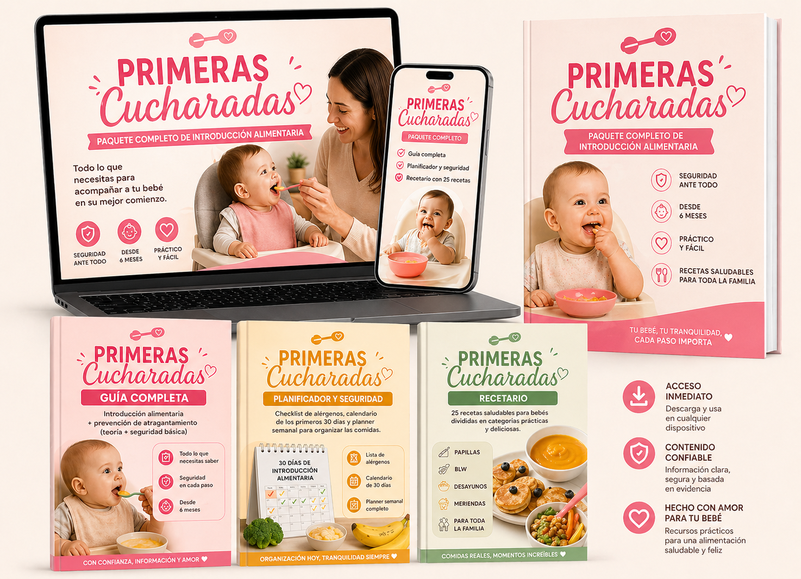

Elena Martínez
Nutricionista Pediátrica"Creé 'Primeras Cucharadas' porque la salud de tu bebé no es para dejarla en manos de consejos sueltos de redes sociales. Aquí tienes el manual de seguridad técnica que yo misma uso."
El kit digital paso a paso para mamás que buscan claridad, organización y seguridad total en la introducción de sólidos de su bebé.
Empezar ahora por solo 37€
Ayer solo tomaba leche y hoy te mira con curiosidad mientras comes. Es emocionante, pero también asusta.
Te han dicho que "ya toca", pero nadie te ha explicado cómo hacerlo sin que el miedo te paralice.
No es solo comida; es el inicio de su relación con el mundo.
Sé exactamente cómo te sientes. Tienes el trozo de brócoli en la mano, el corazón a mil y el miedo al atragantamiento no te deja disfrutar. Miras mil vídeos en TikTok y solo terminas más confundida.
El nudo en el estómago cada vez que tu bebé hace una arcada.
Horas perdidas pensando qué cocinar que sea sano y seguro.
La culpa de no saber si lo estás alimentando de forma correcta.
No tienes que hacerlo sola: existe un método probado para recuperar la calma en la mesa.
El 90% de las madres confunden el reflejo de extrusión (arcada) con un peligro real. Esta confusión es lo que genera el estrés en la mesa.
Es un mecanismo de defensa natural. El bebé tose o hace ruido, pero su cara mantiene el color. Es su cuerpo aprendiendo a gestionar el sólido.
¡Déjalo gestionar solo!
Silencioso. El bebé no puede toser ni respirar. Su cara cambia de color. Aquí es donde debes actuar con la técnica que te enseñamos.
Requiere intervención inmediata.
En el kit, te enseñamos a identificar cada señal para que respires tranquila mientras él descubre texturas.
| Característica | Info suelta (IG/TikTok) | Kit Primeras Cucharadas |
|---|---|---|
| Metodología | Consejos contradictorios | Estructura de Nutricionista Experta |
| Planificación | Recetas aleatorias | Menú de 30 días con alérgenos |
| Seguridad | Miedo por falta de técnica | Guía visual de cortes seguros |
| Gestión del tiempo | Desorganización y estrés | Orden, claridad y ahorro real |
El bebé llora, tú estás tensa, la cocina es un caos y terminas dándole un puré por miedo a los trozos.
Una comida familiar tranquila, tu bebé gestiona sus alimentos con autonomía y tú disfrutas viéndolo crecer sano y feliz.
"Creé 'Primeras Cucharadas' porque la salud de tu bebé no es para dejarla en manos de consejos sueltos de redes sociales. Aquí tienes el manual de seguridad técnica que yo misma uso."
"Estaba aterrada, pero la guía de cortes me dio la vida. Ahora mi bebé come de todo y yo estoy tranquila."
Lucía"Lo mejor es el planificador. Antes perdía horas buscando en Google, ahora todo fluye."
Carmen"La diferencia entre arcada y atragantamiento fue lo que me salvó. Mi marido y yo por fin cenamos tranquilos."
Marta"Increíble cómo le gustan las recetas. La de tortitas de avena es un éxito diario en casa."
Sonia"Tenía miedo de los alérgenos, pero el checklist paso a paso lo hace todo muy sencillo y seguro."
BeatrizAl conseguir tu kit, no solo recibes guías. Te unes a una comunidad de madres españolas que, como tú, han decidido criar desde la confianza y no desde el miedo. No estás sola en este proceso.
Pruébalo 7 días. Si no te sientes más segura, te devolvemos el dinero. Sin riesgos.